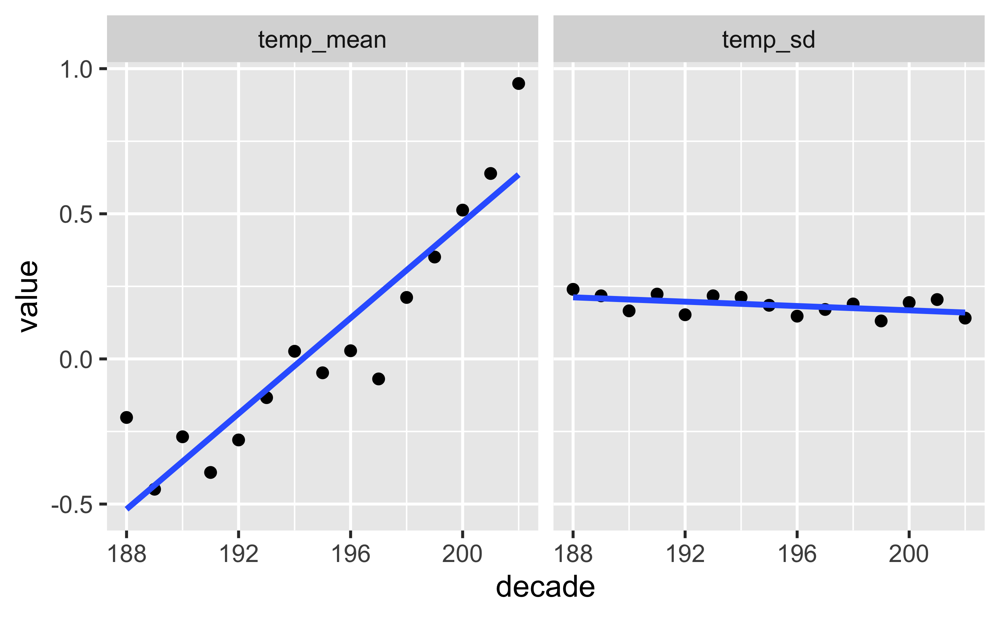
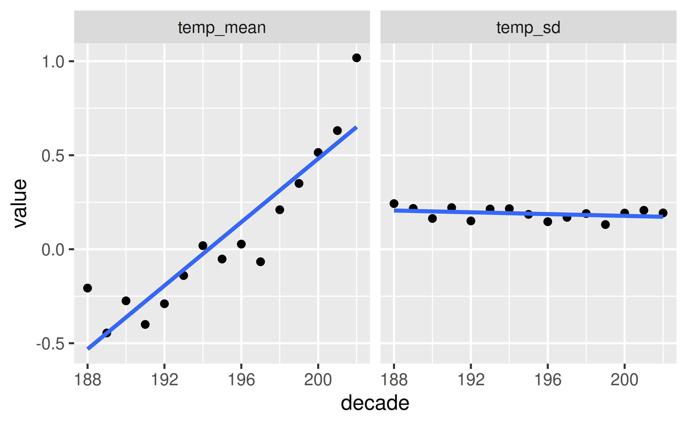
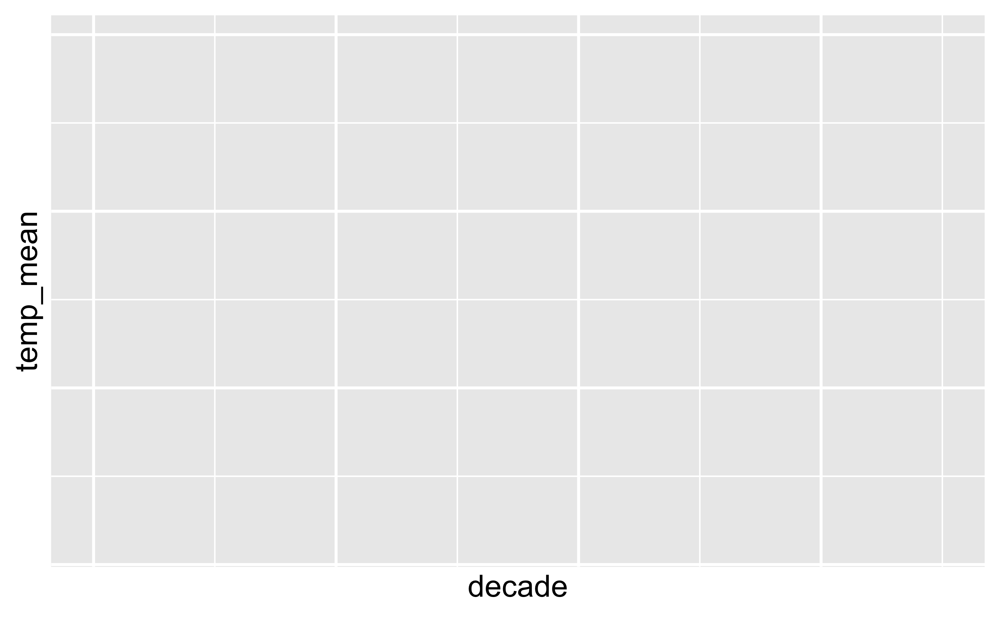

library(tidyverse)Aufgabe
Viele Quellen berichten Klimadaten unserer Erde, z.B. auch National Aeronautics and Space Administration - Goddard Institute for Space Studies.
Von dieser Quelle beziehen wir diesen Datensatz.
Die Datensatz sind auf der Webseite wie folgt beschrieben:
Tables of Global and Hemispheric Monthly Means and Zonal Annual Means
Combined Land-Surface Air and Sea-Surface Water Temperature Anomalies (Land-Ocean Temperature Index, L-OTI)
The following are plain-text files in tabular format of temperature anomalies, i.e. deviations from the corresponding 1951-1980 means.
Global-mean monthly, seasonal, and annual means, 1880-present, updated through most recent month: TXT, CSV
Starten Sie zunächst das R-Paket tidyverse falls noch nicht geschehen.
Zum Animieren verwenden wir diese Pakete:
library(gganimate)
library(plotly)Importieren Sie dann die Daten:
data_path <- "https://data.giss.nasa.gov/gistemp/tabledata_v4/GLB.Ts+dSST.csv"
d <- read_csv(data_path, skip = 1)Wir lassen die 1. Zeile des Datensatzes aus (Argument skip), da dort Metadaten stehen, also keine Daten, sondern Informationen (Daten) zu den eigentlichen Daten.
Aufgaben
- Visualisieren Sie Temperatur pro Jahr und Dekade.
- Animieren Sie Ihre Diagramme mittels
gganimate.
Hinweise:
- Sie müssen zuerst die Dekade als neue Spalte berechnen.
Lösung
Daten aufbereiten
Dekade berechnen:
d <-
d %>%
mutate(decade = round(Year/10))Character in Zahlen umwandeln:
d2 <-
d %>%
select(Year:Dec) %>%
mutate(across(Apr:Dec, as.numeric))d3 <-
d2 %>%
pivot_longer(-Year, values_to = "temp", names_to = "month")months <-
tibble(
month = d3$month[1:12],
month_num = 1:12
)d3 <-
d3 %>%
full_join(months)Daten zusammenfassen
Statistiken pro Dekade für Januar:
d_summarized <-
d %>%
group_by(decade) %>%
summarise(temp_mean = mean(Jan),
temp_sd = sd(Jan))
d_summarizedStatistisches Diagramm
Zur Veranschaulichung visualisieren wir die Ergebnisse:
d_summarized %>%
pivot_longer(-decade) %>%
ggplot(aes(x = decade, y = value)) +
geom_point() +
geom_smooth(method = "lm", se = FALSE) +
facet_wrap(~ name)
Alternativ können Sie zum Visualisieren der Daten z.B. das Paket ggpubr nutzen:
library(ggpubr)
ggscatter(d_summarized, x = "decade", y = "temp_mean", add = "reg.line")
Animiertes Diagramm pro Dekade
Mit Punken:
p1 <-
d_summarized %>%
ggplot(aes(x = decade, y = temp_mean)) +
geom_point(aes(group = seq_along(decade)))
p1 + transition_reveal(decade) 
Mit Linie:
p2 <- ggplot(d_summarized,
aes(x = decade, temp_mean)) +
geom_line()
p2 + transition_reveal(decade)Animiertes Diagramm pro Jahr
d3 %>%
ggplot(aes(x = Year, y = temp)) +
geom_line() +
transition_reveal(Year)Statisches Diagramm für alle Monate
p3 <- d3 %>%
ggplot(aes(x = Year, y = temp, color = month, group = month)) +
geom_line() Animiertes Diagramm für alle Monate
p3 + transition_reveal(Year) 
Fazit
Falls Sie Teile der R-Syntax nicht kennen: Machen Sie sich nichts daraus. Be happy 😄
Categories:
- data
- eda
- lagemaßee
- vis
- animation
- string